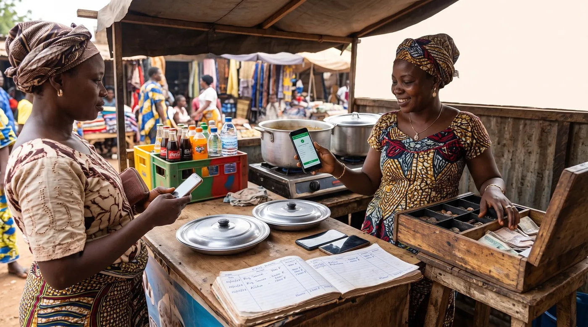

Six portefeuilles mobile money, une seule caisse : comment s'y retrouver
À Ouagadougou, une restauratrice accepte Moov Money, Orange Money, Telecel Money, Wave, Sank Money et Coris Money. Six portefeuilles, six soldes, six historiques, et une seule caisse à fermer le soir. Ce n'est pas une curiosité : c'est en train de devenir la norme du commerce de proximité en Afrique de l'Ouest, parce que refuser un portefeuille revient à refuser un client. Personne n'écrit sur ce que cela fait à la comptabilité d'une boutique. C'est le sujet de ce guide.

Pourquoi on finit avec six portefeuilles
Aucun commerçant ne choisit d'en avoir six. On en ajoute un à chaque fois qu'un client dit « je n'ai que ça ». Et comme chaque opérateur a sa clientèle, son barème et ses promotions, refuser un portefeuille revient à refuser une partie du quartier.
Pour aller plus loin : avant de signer quoi que ce soit, regardez le calculateur de frais d'encaissement, puis les frais cachés d'un logiciel de caisse. Et si le sujet vous concerne, que faire quand le réseau coupe au moment de facturer. Et si vous encaissez aussi en deux monnaies : dollar ou franc congolais à Kinshasa.
Les commerçantes qui l'ont adopté en parlent d'ailleurs en bien, et pour des raisons qu'on entend rarement dans les discours sur la fintech. À Ouagadougou, la responsable d'un restaurant explique que ce système « renforce la sécurité en limitant la manipulation d'espèces » et « permet de résoudre les difficultés liées à la monnaie », tout en réduisant le risque de faux billets. Trois problèmes très concrets — le vol, la monnaie, les faux billets — réglés d'un coup. C'est pour cela que le mouvement ne s'inversera pas.
Le prix à payer est ailleurs, et il est invisible depuis l'extérieur : la journée de vente est désormais éclatée entre six historiques que rien ne relie.
Le vrai problème n'est pas d'encaisser, c'est de rapprocher
Encaisser par mobile money est facile. Ce qui devient très difficile, c'est de répondre le soir à quatre questions qui étaient triviales à l'époque du tiroir-caisse.
- Combien ai-je vendu aujourd'hui ? Il faut additionner six soldes et en retirer ce qui n'est pas une vente : un remboursement, un transfert personnel, un dépôt de fournisseur.
- Est-ce que tout ce qui a été vendu a été encaissé ? Sans enregistrement au moment de la vente, un paiement annoncé mais jamais arrivé ne se voit pas.
- Combien m'ont coûté les frais ? Chaque opérateur a son barème, et le coût réel se dilue dans six relevés.
- Qui a encaissé quoi ? Quand deux employés utilisent le même téléphone de service, la réponse n'existe nulle part.
Aucune de ces questions n'est comptable au sens ennuyeux du terme. Ce sont les quatre questions dont dépend le fait de savoir si le commerce gagne de l'argent.
La méthode du soir, en quinze minutes
La règle qui change tout tient en une phrase : on enregistre la vente au moment de la vente, avec le nom du portefeuille utilisé. Le reste en découle.
- Au moment de la vente, saisissez le montant et sélectionnez le moyen de paiement : espèces, Orange Money, Wave, Moov, et ainsi de suite. C'est la seule seconde de discipline que demande toute la méthode.
- Ne remettez la marchandise qu'après avoir vu la confirmation sur votre propre téléphone. Pas sur l'écran du client. Cette règle-là est le socle de tout ce qui suit.
- Le soir, sortez le total de la journée par moyen de paiement. Vous obtenez six chiffres attendus.
- Comparez chaque chiffre attendu au solde réellement bougé sur le portefeuille correspondant. Un écart n'est pas grave le jour même ; il est ingérable trois semaines plus tard.
- Notez les écarts dans un cahier, avec leur explication. « Wave : −2 000, remboursement client » est une explication ; « Wave : −2 000 » n'en est pas une.
- Une fois par semaine, additionnez les frais réellement prélevés, par opérateur. C'est le seul moyen de savoir lequel vous coûte le plus, et donc lequel proposer en premier au client indifférent.
Quinze minutes par jour au début, cinq ensuite. C'est le prix pour que la question « combien j'ai gagné ce mois-ci » ait une réponse.
Les fraudes qui se jouent au comptoir
Le mobile money déplace le risque plutôt qu'il ne le supprime, et les fraudes visent précisément le moment où l'on est pressé.
Le faux message de confirmation. Le client montre son écran, l'écran affiche la bonne somme, la marchandise part, et rien n'arrive jamais. La parade est toujours la même et elle ne coûte rien : ne jamais valider sur l'écran d'autrui, toujours sur le sien.
La manipulation du téléphone de service. Celle-ci est plus sournoise et vise les points de vente eux-mêmes. La Division spéciale de cybersécurité au Sénégal a documenté le schéma : un individu se présente comme un client, obtient qu'on lui confie le téléphone professionnel « pour renseigner son numéro », et en profite pour effectuer un retrait frauduleux — 200 000 francs CFA dans le cas rapporté, et quatre affaires similaires la même semaine. La parade : on ne met jamais le téléphone de service dans la main d'un client, on tape soi-même le numéro qu'il dicte.
Les frais hors barème. En Guinée, pendant la crise de liquidité, un syndicat de points de vente a dénoncé une dérive chiffrée : « Pour retirer 500 mille, un point de vente veut retirer 50 mille au client », soit 10 % hors tarif officiel. Si vous êtes commerçant, cela vous concerne dans les deux sens : c'est ce que subissent vos clients quand ils vont chercher du liquide, et c'est la tentation à laquelle vous exposez votre propre gérant si vous ne contrôlez rien.
Quand le portefeuille est plein mais qu'il n'y a plus de liquide
Il existe une panne dont on ne parle jamais dans les articles sur le paiement mobile : celle où l'argent est bien là, dans le téléphone, mais où plus personne ne peut le transformer en billets.
Une gérante de point de vente au marché de Koloma, à Conakry, décrit exactement cette impasse : « À 99 %, les gens viennent uniquement pour retirer de l'argent. Je peux passer 3 à 4 jours sans que mon fournisseur m'envoie de l'argent. Pourtant, nous avons des charges, la location. » Le commerce continue de tourner sur le papier, et la trésorerie physique s'assèche.
Trois habitudes limitent les dégâts, et elles se prennent avant la crise, pas pendant :
- Ne laissez pas dormir tout votre chiffre d'affaires dans les portefeuilles. Fixez-vous un seuil au-delà duquel vous transférez vers un compte ou retirez, et tenez-le.
- Gardez toujours un fond de caisse en espèces suffisant pour un ou deux jours d'achats fournisseurs, même si tout se passe bien depuis des mois.
- Payez vos fournisseurs par le même canal que celui où vous encaissez quand c'est possible. C'est la façon la plus simple de faire circuler l'argent sans passer par le liquide.
Le mobile money contre l'ardoise : l'effet inattendu
Voici le détail le plus intéressant du terrain, et il inverse une idée reçue. On croit que l'ardoise vient de la pauvreté du client. Souvent, elle vient d'un manque de monnaie.
Une restauratrice de Ouagadougou l'explique très simplement : « Avec le paiement en espèces, certains clients promettent de revenir payer plus tard parce qu'ils n'ont pas la monnaie. Ce n'est pas toujours évident pour nous. » Le client a l'argent. Il a un billet trop gros. Il part en promettant, et une créance est née d'un problème purement logistique.
Le paiement mobile règle ce cas précis, puisqu'on peut payer au franc près. Ce n'est pas une révolution, c'est une fuite bouchée — mais sur un restaurant de quartier, la somme de ces petites promesses non tenues sur un mois n'est pas anecdotique. Et pour les ardoises qui restent, la règle ne change pas : elles doivent être suivies au nom du client, avec un solde visible, et non de mémoire.
Ce qu'une caisse doit faire de tout ça
digabloPos
Sur ce sujet précis, ce qui compte n'est pas d'ajouter un septième portefeuille, c'est de rassembler les six dans un seul journal. digabloPos enregistre chaque vente avec son moyen de paiement et le nom de l'employé qui l'a saisie, ce qui donne le soir un total par portefeuille à comparer aux soldes réels. Il ne prélève aucune commission imposée et reste neutre vis-à-vis des moyens de paiement : vous gardez vos comptes chez vos opérateurs et toute la marge que cela vous laisse. Le crédit client est suivi nom par nom avec un solde visible, et tout fonctionne hors ligne avec synchronisation, ce qui n'est pas un détail quand le réseau qui porte le paiement est aussi celui qui porte la caisse.
Soyons clairs sur les limites. digabloPos ne se connecte pas aux comptes Orange Money, Wave, Moov, Telecel, Sank ou Coris, ne récupère pas automatiquement leurs relevés, et ne vérifie aucun paiement à votre place : la confirmation se regarde sur votre propre téléphone, toujours. Il n'est pas non plus un établissement de paiement et ne détient pas votre argent. Le plan de base est gratuit à vie pour 2 employés avec 30 jours d'historique ; le troisième employé et l'historique illimité sont des modules payants.
👍 Points forts
- Un total par moyen de paiement chaque soir, à comparer aux six soldes
- Chaque vente nominative et horodatée, même quand le téléphone est partagé
- Aucune commission imposée : vous gardez vos comptes opérateurs
- Crédit client par nom, avec solde visible, et mode hors ligne
👎 À savoir
- Ne se connecte pas aux portefeuilles et ne récupère pas leurs relevés
- Ne vérifie aucun paiement à votre place
- Historique limité à 30 jours sur le plan gratuit
Un total par portefeuille, chaque soir
Ouvrez une caisse gratuite, enregistrez une journée en variant les moyens de paiement, puis sortez le total par moyen. C'est exactement le chiffre qui manque aujourd'hui.
Créer ma caisse gratuiteCinq règles à afficher près de la caisse
Écrites à la main sur une feuille, elles valent mieux que n'importe quelle formation. Elles s'adressent autant à vous qu'à la personne qui tient la boutique à votre place.
- On ne remet jamais la marchandise avant d'avoir vu la confirmation sur NOTRE téléphone.
- On ne donne jamais le téléphone de service à un client. On tape soi-même le numéro qu'il dicte.
- Chaque vente est saisie avec son moyen de paiement, au moment de la vente.
- Le soir, on compare le total de la caisse au solde de chaque portefeuille, et on écrit l'explication de tout écart.
- Au-delà de [votre seuil], on transfère ou on retire, sans attendre que le portefeuille serve de coffre-fort.
Questions fréquentes
Comment tenir une caisse avec plusieurs portefeuilles mobile money ?
La règle qui change tout est d'enregistrer chaque vente au moment où elle se fait, avec le nom du portefeuille utilisé. Le soir, vous sortez un total par moyen de paiement et vous le comparez au solde réellement bougé sur chaque portefeuille. Un écart repéré le jour même se règle en une minute ; le même écart retrouvé trois semaines plus tard est ingérable.
Comment éviter les faux messages de confirmation de paiement ?
En ne validant jamais une vente sur l'écran du client. La confirmation se regarde sur votre propre téléphone ou dans votre propre caisse, sans exception et même pour un habitué. C'est une habitude à installer une fois, pas une décision à reprendre à chaque vente, parce que la fraude vise précisément les moments où vous êtes pressé.
Un client me demande le téléphone du point de vente pour saisir son numéro, est-ce risqué ?
Oui, et c'est un schéma documenté. La Division spéciale de cybersécurité au Sénégal a traité un cas où un individu, ayant obtenu le téléphone professionnel pour « renseigner son numéro », a effectué un retrait frauduleux de 200 000 francs CFA, avec quatre affaires similaires la même semaine. La règle est simple : le téléphone de service ne quitte jamais vos mains, vous tapez vous-même le numéro dicté.
Que faire quand il n'y a plus de liquidité chez les points de vente ?
C'est une panne réelle : l'argent est dans le portefeuille mais plus personne ne peut le transformer en billets, comme l'a décrit une gérante à Conakry passant trois à quatre jours sans réapprovisionnement. Trois habitudes limitent les dégâts, et se prennent avant la crise : fixer un seuil au-delà duquel vous transférez ou retirez, garder un fond de caisse en espèces couvrant un ou deux jours d'achats, et payer vos fournisseurs par le canal où vous encaissez quand c'est possible.
Le mobile money réduit-il vraiment les ardoises ?
Sur un cas précis, oui, et c'est contre-intuitif. Une part des ardoises ne vient pas d'un manque d'argent mais d'un manque de monnaie : le client a un billet trop gros, promet de revenir, et la créance naît d'un problème logistique. Le paiement mobile règle ce cas puisqu'on paie au franc près. Pour les ardoises qui restent, la règle ne change pas : suivi au nom du client, avec un solde visible, jamais de mémoire.
Un logiciel de caisse peut-il se connecter à Orange Money ou à Wave ?
digabloPos ne le fait pas et ne récupère pas automatiquement les relevés des opérateurs : soyez prudent avec tout produit qui le promettrait sans le démontrer. Ce qu'une caisse apporte ici est différent et suffit à régler le vrai problème : elle rassemble les six portefeuilles dans un seul journal en enregistrant le moyen de paiement de chaque vente, ce qui vous donne le chiffre attendu à confronter à chaque solde.
Sources
Les témoignages cités sont publics et nominatifs. Consultez-les dans leur contexte ; les barèmes des opérateurs, eux, sont à vérifier chez l'opérateur.
- CFinance : les commerçantes de Ouagadougou, les six portefeuilles acceptés par un même restaurant, et l'ardoise née du manque de monnaie.
- Osiris : le schéma du téléphone de service confié à un faux client, et les affaires traitées la même semaine par la Division spéciale de cybersécurité.
- Vision Guinée : la gérante du marché de Koloma et l'assèchement de la trésorerie physique.
- Regard Guinée : les frais hors barème dénoncés pendant la crise de liquidité.